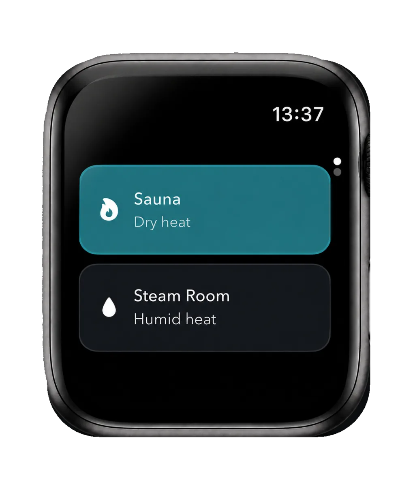

Is there a sauna workout on Apple Watch?
Apple Watch does not include a dedicated sauna workout type. Sauna Log is built for sauna and steam room sessions, with a timer, heart rate, calorie estimates and Apple Health support.
Choose your timer, follow your heart rate, and save each session to your iPhone and Apple Health. Large controls, background timing and haptic alerts keep the essentials close at hand.
Apple Watch does not include a dedicated sauna workout type. Sauna Log is built for sauna and steam room sessions, with a timer, heart rate, calorie estimates and Apple Health support.
Start a Sauna Log session on Apple Watch and, when Apple provides the data, see active and total calorie estimates during the session and in your saved record. Read the full calorie tracking guide.
Yes. Start and monitor the session on Apple Watch, then sync the completed record to iPhone when the devices reconnect.
Tap Sauna or Steam Room. The choice takes you straight to the timer screen, even if you select the currently highlighted type.
Pick one of four defaults and slide to start. Defaults are managed on iPhone and flow to the Watch.
During the session, see time remaining, live heart rate, active and total calorie estimates, and the optional cold-shower setting. Slide to stop early or add more time when the timer completes.

The timer is designed to keep its timing when the display is off. End-of-session and heart-rate alerts can use Watch haptics and notifications when enabled.
Manual entry keeps the feature useful for public facilities and home setups without requiring extra hardware. Choose Celsius or Fahrenheit in the iPhone app and carry that preference across Apple Watch and session history.
Adjust it on the Watch for a particular room. If you leave it untouched, the iPhone record marks it as the remembered default.
Separate defaults mean a regular steam room does not overwrite your sauna setting.
Temperature and humidity are there when they add context, not as another task you have to complete.
Learn how to start and save a sauna session from your wrist.
Understand active calories, total calories and Apple Health, then download Sauna Log to keep the session record.